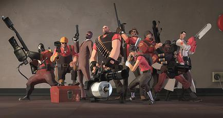
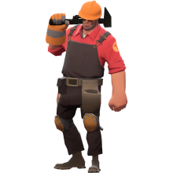

Ovaj sajt je o video igri Team Fortress 2 i jednom liku iz nje koji se zove Engineer, to jest Inžinjer.

Likovi iz video igre Team Fortress 2.
Likovi iz video igre Team Fortress 2.
TF2 pripada multiplayer class-based FPS žanru kompjuterskih igara, što znači da igrač kontroliše u prvom licu svog lika koji pripada jednoj od 9 klasa u igri, i cilj mu je da zajedno sa svojim saigračima iz tima pobedi protivnički tim. Runde se odvijaju na tzv. mapama, što su nivoi koji u sebi sadrže određene ciljeve koji ili crveni tim štiti a plavi napada ili oba tima štite svoj i napadaju protivnički.
 Engineer je jedna od klasa koja se može igrati. On pripada Defense kategoriji jer on može da sagradi jedan Sentry Gun koji se ne pomera ali automatski puca neprijatelje oko sebe.